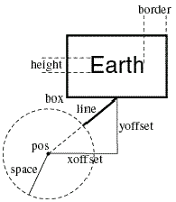

|
If you're new to Python A VPython tutorial
What's new in Visual 5 VPython web site |
The label ObjectWith the label object you can display text in a box. Here are simple examples (in the second label statement, note the standard Python scheme for formatting numerical values, where 1.5f means 1 figure before the decimal point and 5 after): box(pos=(0,0,0), color=color.red)  There are many additional label options. In the accompanying diagram, a sphere representing the Earth (whose center is at earth.pos) has an associated label with the text "Earth" in a box, connected to the sphere by a line which stops at the surface of the sphere: earthlabel = label(pos=earth.pos, A unique feature of the label object is that several attributes are given in terms of screen pixels instead of the usual "world-space" coordinates. For example, the height of the text is given in pixels, with the result that the text remains readable even when the sphere object is moved far away. Other pixel-oriented attributes include xoffset, yoffset, and border. Here are the label attributes: pos; x,y,z The point in world space being labeled. If there are no offsets (see diagram), the center of the text is at pos xoffset, yoffset The x and y components of the line, in pixels (see diagram) text The text to be
displayed, such as 'Earth' font Name of the desired
font; for example, 'sans', or 'serif', or 'monospace' (fixed-width) height Height of the font in pixels color, red, green, blue Color of the text opacity Opacity of the
background of the box, default 0.66 border Distance in pixels from the text to the surrounding box box 1 if the box should be drawn (default), else 0 line 1 if the line from the box to pos should be drawn (default), else 0 linecolor Color of the line and box space World-space radius
of a sphere surrounding pos, See description of Additional Attributes available for all 3D display objects. |
||